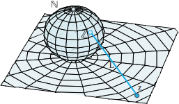
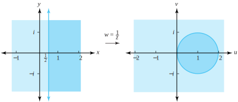
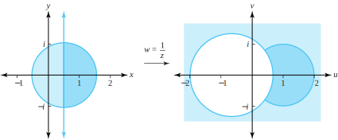
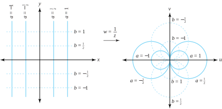

The mapping \(w=f(z)=\frac{1}{z}\) is called the reciprocal transformation. It maps the \(z\) plane one-to-one and onto the \(w\) plane except for the point \(z=0\text{,}\) which has no image. The point \(w=0\) has no preimage or inverse image. Using exponential notation \(w=\rho e^{i\phi}\text{,}\) if \(z=re^{i\theta} \ne 0\text{,}\) we have
The geometric description of the reciprocal transformation is now evident. It is an inversion (that is, the modulus of \(\frac{1}{z}\) is the reciprocal of the modulus of \(z\)) followed by a reflection through the \(x\) axis. The ray \(r>0, \, \theta =\alpha\text{,}\) is mapped one-to-one and onto the ray \(\rho >0, \, \phi = -\alpha\text{.}\) Points that lie inside the unit circle \(C_1(0) =\{z:|z|=1\}\) are mapped onto points that lie outside the unit circle and vice versa, as Figure 2.5.1 illustrates.
We can extend the system of complex numbers by joining to it an “ideal” point denoted by \(\infty\) and called the point at infinity. This new set is called the extended complex plane. You will see shortly that the point \(\infty\) has the property, loosely speaking, that \(z \to \infty\) iff \(|z| \to \infty\text{.}\)
An \(\varepsilon\)-neighborhood of the point at infinity is the set \(\{z:|z|>\frac{1}{\varepsilon}\}\text{.}\) The usual way to visualize the point at infinity is by using what we call the stereographic projection, which is attributed to Riemann. Let \(\Omega\) be a sphere of diameter 1 that is centered at the point \((0,\,0,\,\frac{1 }{2})\) in three-dimensional space where coordinates are specified by the triple of real numbers \((x, y, \xi)\text{.}\) Here the complex number \(z=x+iy\) is associated with the point \(z=(x, y, 0)\text{.}\)
The point \(\mathbb{N} =(0, 0, 1)\) on \(\Omega\) is called the north pole of \(\Omega\text{.}\) If we let \(z\) be a complex number and consider the line segment \(L\) in three-dimensional space that joins \(z\) to the north pole \(\mathbb{N} =(0,0,1)\text{,}\) then \(L\) intersects \(\Omega\) in exactly one point \(L\text{.}\) The correspondence \(z\longleftrightarrow\mathbb{Z}\) is called the stereographic projection of the complex \(z\) plane onto the Riemann sphere \(\Omega\text{.}\) A point \(z=x+iy\) of unit modulus will correspond with \(\mathbb{Z} =(\frac{x}{2},\frac{y}{2},\frac{1}{2})\text{.}\) If \(z\) has modulus greater than 1, then \(L\) will lie in the upper hemisphere where for points \(\mathbb{Z} =(x, y, \xi)\) we have \(\xi > \frac{1}{2}\text{.}\) If \(z\) has modulus less than 1, then \(L\) will lie in the lower hemisphere where for points \(\mathbb{Z} =(x, y,\,\xi )\) we have \(\xi \lt \frac{1}{2}\text{.}\) The complex number \(z=0=0+0i\) corresponds with the south pole, \(S=(0, 0, 0)\text{.}\) Now you can see that indeed \(z \to \infty\) iff \(|z|\to \infty\) iff \(L\to N\text{.}\) Hence \(N\) corresponds with the “ideal” point at infinity. The situation is shown in Figure 2.5.2.

Figure2.5.2.The Riemann sphere
Let’s reconsider the mapping \(w=\frac{1}{z}\) by assigning the images \(w=\infty\) and \(w=0\) to the points \(z=0\) and \(z=\infty\text{,}\) respectively. We now write the reciprocal transformation as
\begin{equation}
w=f(z) = \begin{cases} \frac{1}{z} \;\, \text{ when } z \ne 0 \text{ and } z \ne \infty; \\ 0 \;\, \text{ when } z=\infty; \\ \infty \text{ when } z=0. \end{cases}\tag{2.5.2}
\end{equation}
Note that the transformation \(w=f(z)\) is a one-to-one mapping of the extended complex \(z\) plane onto the extended complex \(w\) plane. Further, \(f\) is a continuous mapping from the extended \(z\) plane onto the extended \(w\) plane. We leave the details to you.
Example2.5.3.
Show that the image of the half-plane \(A=\{z:\mathrm{Re}(z) \ge \frac{1}{2}\}\) under the mapping \(w= \frac{1}{z}\) is the closed disk \(\overline{D}_1(1) =\{w:|w-1|\le 1\}\text{.}\)
Solution.
Proceeding as we did in Example 2.6, we get the inverse mapping of \(u+iv=w=f(z) =\frac{1}{z}\) as \(z=f^{-1}(w) =\frac{1}{w}\text{.}\) Then
which describes the disk \(\overline{D}_1(0)\text{.}\) As the reciprocal transformation is one-to-one, preimages of the points in the disk \(\overline{D}_1(0)\) will lie in the right half-plane \(\mathrm{Re}(z) \ge \frac{1}{2}\text{.}\)Figure 2.5.4 illustrates this result.

Figure2.5.4.The image of \(\mathrm{Re}(z) \ge \frac{1}{2}\) under the mapping \(w=\frac{1}{z}\)
Remark2.5.5.
Alas, there is a fly in the ointment here. As our notation indicates, Equations (2.5.3) and (2.5.4) are not equivalent. The former implies the latter, but not conversely. That is, Equation (2.5.4) makes sense when \((u,\,v) =(0,\,0)\text{,}\) whereas Equation (2.5.3) does not. Yet Figure 2.5.4 seems to indicate that \(f\) maps \(\mathrm{Re}(z) \ge \frac{1}{2}\) onto the entire disk \(\overline{D}_1(0)\text{,}\) including the point \((0,\,0)\text{.}\) Actually, it does not, because \((0,\,0)\) has no preimage in the complex plane. The way out of this dilemma is to use the complex point at infinity. It is that quantity that gets mapped to the point \((u,\,v) =(0,\,0)\text{,}\) for as we have already indicated in Equation (2.5.2), the preimage of \(0\) under the mapping \(\frac{1}{z}\) is indeed \(\infty\text{.}\)
Example2.5.6.
For the transformation \(\frac{1}{z}\text{,}\) find the image of the portion of the half plane \(\mathrm{Re}(z) \ge \frac{1}{2}\) that is inside the closed disk \(\overline{D}_1(\frac{1}{2}) =\{z:|z-\frac{1}{2}|\le 1\}\text{.}\)
Solution.
Using the result of Example 2.5.3, we need only find the image of the disk \(\overline{D}_1(\frac{1}{2})\) and intersect it with the closed disk \(\overline{D}_1(1)\text{.}\) To begin, we note that
which is an inequality that determines the set of points in the \(w\) plane that lie on and outside the circle \(C_{\frac{4}{3}}(-\frac{2}{3}) =\{w:|w+\frac{2}{3}|=\frac{4}{3}\}\text{.}\) Note that we do not have to deal with the point at infinity this time, as the last inequality is not satisfied when \((u,v) =(0, 0)\text{.}\) When we intersect this set with \(\overline{D}_1(1)\text{,}\) we get the crescent-shaped region shown in Figure 2.5.7.

Figure2.5.7.The mapping \(w=\frac{1}{z}\) discussed in Example 2.5.6
To study images of “generalized circles,” we consider the equation
where \(A\text{,}\)\(B\text{,}\)\(C\text{,}\) and \(D\) are real numbers. This equation represents either a circle or a line, depending on whether \(A \ne 0\) or \(A=0\text{,}\) respectively. Transforming the equation to polar coordinates gives
\begin{equation*}
Ar^2+r(B\cos \theta +C\sin \theta) + D = 0\text{.}
\end{equation*}
Using the polar coordinate form of the reciprocal transformation given in Equation (2.5.1), we can express the image of the curve in the preceding equation as
which represents either a circle or a line, depending on whether \(D \ne 0\) or \(D=0\text{,}\) respectively. Thus, the reciprocal transformation \(w=\frac{1}{z}\) carries the class of lines and circles onto itself.
Example2.5.8.
Find the images of the vertical lines \(x=a\) and the horizontal lines \(y=b\) under the mapping \(w=\frac{1}{z}\text{.}\)
Solution.
Considering the point at infinity, the image of the line \(x=0\) is the line \(u=0\text{;}\) that is, the \(y\)-axis is mapped onto the \(v\)-axis. Similarly, the \(x\)-axis is mapped onto the \(u\)-axis. The inverse mapping is \(z=\frac{1}{w}=\frac{u}{u^2+v^2}+i\frac{-v}{u^2+v^2}\text{,}\) so if \(a \ne 0\text{,}\) the vertical line \(x=a\) is mapped onto the set of \((u,v)\) points satisfying \(\frac{u}{u^2+v^2}=a\text{.}\) For \((u, v) \ne (0, 0)\text{,}\) this outcome is equivalent to
which is the equation of a circle in the \(w\) plane with center \(w_0 = \frac{1}{2a}\) and radius \(|\frac{1}{2a}|\text{.}\) The point at infinity is mapped to \((u,v) =(0,0)\text{.}\) Similarly, \(y=b\) is mapped onto the circle
which has center \(w_0=-\frac{i}{2b}\) and radius \(|\frac{1}{2b}|\text{.}\)Figure 2.5.9 illustrates the images of several lines.

Figure2.5.9.The images of horizontal and vertical lines under the reciprocal transformation
ExercisesExercises
For Exercises 1–8, find the image of the given circle or line under the reciprocal transformation \(w=\frac{1}{z}\text{.}\)
1.
The horizontal line \(\mathrm{Im}(z) =\frac{1}{5}\text{.}\)
Solution.
The circle \(C_{\frac{5}{2}}(-\frac{5}{2}i) = \{w:|w+\frac{5}{2}i|=\frac{5}{2}\}\text{.}\)
2.
The circle \(C_{\frac{1}{2}}(-\frac{i}{2}) =\{z:|z+\frac{i}{2}|=\frac{1}{2}\}\text{.}\)
3.
The vertical line \(\mathrm{Re}(z)=-3\text{.}\)
Solution.
The circle \(C_{\frac{1}{6}}(-\frac{1}{6}) = \{w:|w+\frac{1}{6}|=\frac{1}{6}\}\text{.}\)
4.
The circle \(C_1(-2) =\{z:|z+2|=1\}\text{.}\)
5.
The line \(2x+2y=1\text{.}\)
Solution.
The circle \(C_{\sqrt{2}}(1-i) = \{w:|w-1+i|=\sqrt{2}\}\text{.}\)
6.
The circle \(C_1(\frac{i}{2}) =\{z:|z-\frac{i}{2}|=1\}\text{.}\)
7.
The circle \(C_1(\frac{3}{2}) =\{z:|z-\frac{3}{2}|=1\}\text{.}\)
Solution.
The circle \(C_{\frac{4}{5}}(\frac{6}{5}) = \{w:|w-\frac{6}{5}|=\frac{4}{5}\}\text{.}\)
8.
The circle \(C_2(-1+i) =\{z:|z+1-i|=2\}\text{.}\)
9.
Limits involving \(\infty\text{.}\) The function \(f(z)\) is said to have the limit \(L\) as \(z\) approaches \(\infty\text{,}\) and we write \(\lim\limits_{z \to \infty} f(z)=L\) iff for every \(\varepsilon>0\) there exists an \(R>0\) such that \(f(z) \in D_{\varepsilon}(L)\) (i.e., \(|f(z) -L|\lt \varepsilon\)) whenever \(|z|>R\text{.}\) Likewise, \(\lim\limits_{z \to z_0}\,f(z)=\infty\) iff for every \(R>0\) there exists \(\delta >0\) such that \(|f(z)|>R\) whenever \(z\in D_{\delta}^*(z_0)\) (i.e., \(0\lt |z-z_0|\lt \delta\)). Use this definition to
(a)
show that \(\lim\limits_{z \to \infty}\,\frac{1}{z}=0\text{.}\)
Solution.
Let \(\varepsilon > 0\) be given. Choose \(R=\frac{1}{\varepsilon}\text{.}\) Suppose \(|z|>R\text{.}\) Then \(\frac{1}{|z|} \lt \frac{1}{R} = \varepsilon\text{,}\) so \(|f(z)-0| = |\frac{1}{z}| \lt \varepsilon\text{,}\)i.e., \(f(z) \in D_{\varepsilon}(0)\text{.}\)
(b)
show that \(\lim\limits_{z \to 0}\,\frac{1}{z}=\infty\text{.}\)
10.
Show that the reciprocal transformation \(w=\frac{1}{z}\) maps the vertical strip \(0\lt x\lt \frac{1}{2}\) onto the region in the right half-plane \(\mathrm{Re}(w)>0\) that is outside the disk \(D_1(1) =\{w:|w-1|\lt 1\}\text{.}\)
11.
Find the image of the disk \(D_{\frac{4}{3}}\left(-\frac{2i}{3}\right) =\{z:|z+\frac{2i}{3}|\lt \frac{4}{3}\}\) under \(f(z)=\frac{1}{z}\text{.}\)
Solution.
The exterior of the disk \(D_1(-\frac{i}{2}) = \{(u,v):u^2+(v+\frac{1}{2} ^2>1\}\text{.}\)
12.
Show that the reciprocal transformation maps the disk \(|z-1|\lt 2\) onto the region that lies exterior to the circle \(\{w:|w+\frac{1}{3}|=\frac{2}{3}\}\text{.}\)
13.
Find the image of the half-plane \(y>\frac{1}{2}-x\) under the mapping \(w=\frac{1}{z}\text{.}\)
Solution.
The disk \(D_{\sqrt{2}}(1-i) = \{(u,v):(u-1)^2+(v+1)^2\lt 2\}\text{.}\)
14.
Show that the half-plane \(y\lt x-\frac{1}{2}\) is mapped onto the disk \(|w-1-i|\lt \sqrt{2}\) by the reciprocal transformation.
15.
Find the image of the quadrant \(x>1\text{,}\)\(y>1\) under the mapping \(w=\frac{1}{z}\text{.}\)
Solution.
The intersection of \(D_{\frac{1}{2}}(\frac{1}{2}) = \{(u,v):(u-\frac{1}{2})^2+v^2\lt \frac{1}{4}\}\) and
The last expression simplifies to \(4u[(u+1)^2+v^2] > 0\text{,}\) which occurs iff \(u=\mathrm{Re}(w) > 0\text{.}\) Show the details!
18.
Show that the parabola \(2x=1-y^2\) is mapped onto the cardioid \(\rho=1+\cos \phi\) by the reciprocal transformation.
19.
Use the definition in Exercise 2.5.9 to prove that \(\lim\limits_{z \to \infty}\frac{z+1}{z-1}=1\text{.}\)
Solution.
Let \(\varepsilon > 0\) be given, Choose \(R=\frac{2}{\varepsilon}+1\text{.}\) Assume \(|z|>R=\frac{2}{\varepsilon}+1\text{.}\) Then \(|z-1| \ge |z|-1 > (\frac{2}{\varepsilon}+1) - 1 = \frac{2}{\varepsilon}\text{.}\) Therefore \(|\frac{2}{z-1}|\lt \varepsilon\text{,}\) so \(|\frac{z+1}{z-1}-1| = |\frac{2}{z-1}| \lt \varepsilon\text{.}\) To see how to get \(R\text{,}\) start with \(|\frac{z+1}{z-1}-1| \lt \varepsilon\text{,}\) and work backwards.
20.
Show that \(z=x+iy\text{,}\) when mapped onto the Riemann sphere, has coordinates
Explain how the quantities \(+\infty\text{,}\)\(-\infty\text{,}\) and \(\infty\) differ. How are they similar?
Solution.
Broadly speaking, \(\pm \infty\) are designations for limits in Calculus indicating quantities that get arbitrarily positive or negative. There is no such measure in Complex Analysis. Further, the point \(\infty\) can be given a meaningful definition on the Riemann Sphere. There is no such analogy for \(\pm \infty\text{.}\) Elaborate and give some other comparisons.